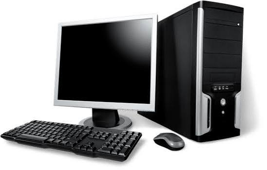
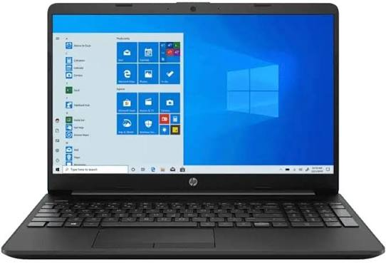
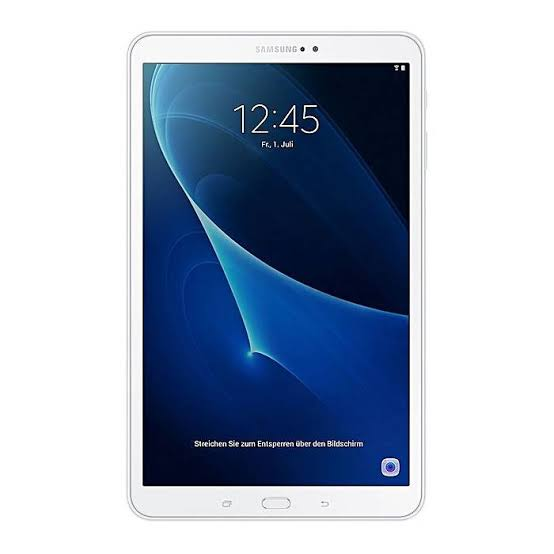
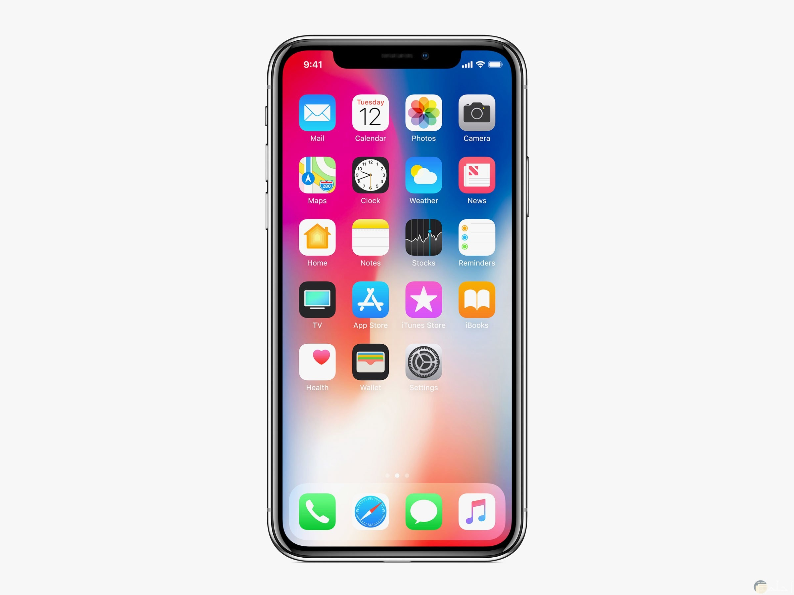

Types of Computers
المستوى الأول
تعرف على أنواع الحواسيب المختلفة، واستخدامات كل نوع، وكيف تختار الجهاز المناسب لك.
بعد الانتهاء من هذا الدرس ستتعرف على:
عندما تسمع كلمة حاسوب (Computer)، قد تتخيل جهازًا مكتبيًا كبيرًا يحتوي على شاشة ولوحة مفاتيح وفأرة. لكن في الواقع، هناك العديد من أنواع الحواسيب التي نستخدمها يوميًا، حتى وإن لم نلاحظ ذلك.
فالهاتف الذكي الذي في جيبك، والجهاز اللوحي الذي تستخدمه للدراسة، والحاسوب المحمول الذي تحمله إلى الجامعة، كلها تُعد أنواعًا مختلفة من الحواسيب.
ورغم اختلاف أحجامها وأشكالها، فإن جميعها تعمل بالطريقة نفسها؛ فهي تستقبل البيانات (Input) ثم تعالجها (Processing) وأخيرًا تعرض النتائج (Output).
لا يوجد نوع واحد يُعد الأفضل للجميع، فاختيار الحاسوب يعتمد على احتياجات المستخدم.
فقد يحتاج المصمم أو المبرمج إلى جهاز قوي، بينما يحتاج الطالب إلى جهاز خفيف وسهل الحمل، وقد يكتفي شخص آخر باستخدام هاتفه الذكي لإنجاز معظم مهامه اليومية.
لهذا السبب ظهرت أنواع مختلفة من الحواسيب، ولكل نوع مميزات واستخدامات تناسب فئة معينة من المستخدمين.

هو أكثر أنواع الحواسيب شيوعًا في المكاتب والمدارس والشركات، ويتكون غالبًا من عدة أجزاء منفصلة، مثل الشاشة (Monitor) ووحدة النظام (System Unit) ولوحة المفاتيح (Keyboard) والفأرة (Mouse).
ويتميز بإمكانية تغيير أو ترقية معظم مكوناته، مثل زيادة الذاكرة أو استبدال بطاقة الرسومات أو إضافة وحدات تخزين جديدة، مما يجعله مناسبًا للاستخدام طويل المدى.
البرمجة، التصميم، المونتاج، الألعاب، العمل المكتبي.

الحاسوب المحمول هو جهاز يجمع جميع المكونات الأساسية داخل هيكل واحد، مثل الشاشة ولوحة المفاتيح ولوحة اللمس (Touchpad) والبطارية.
ويُعد الخيار الأكثر شيوعًا للطلاب والموظفين لأنه يجمع بين الأداء وسهولة التنقل.
الدراسة، البرمجة، العمل عن بُعد، تصفح الإنترنت، مشاهدة الفيديوهات.

الجهاز اللوحي هو حاسوب صغير يعتمد على شاشة تعمل باللمس، ولا يحتاج غالبًا إلى لوحة مفاتيح أو فأرة. ومن أشهر أمثلته جهاز iPad وأجهزة Samsung Galaxy Tab.
ويتميز بسهولة الاستخدام وخفة الوزن، لذلك يُستخدم بكثرة في التعليم وقراءة الكتب الإلكترونية.
الدراسة، قراءة الكتب، الرسم الرقمي، مشاهدة الفيديوهات.

الهاتف الذكي هو أصغر أنواع الحواسيب وأكثرها انتشارًا في العالم. ورغم حجمه الصغير، فإنه يحتوي على معالج (CPU) وذاكرة (RAM) ووحدة تخزين (Storage) ونظام تشغيل (Operating System) تمامًا مثل الحاسوب.
لذلك يُعد الهاتف الذكي حاسوبًا كاملًا، لكنه مصمم ليكون صغير الحجم وسهل الحمل.
التواصل، التصفح، التصوير، مشاهدة الفيديوهات، استخدام التطبيقات.
| النوع | أهم ميزة | الاستخدام الأنسب |
|---|---|---|
| الحاسوب المكتبي (Desktop) |
أعلى أداء | البرمجة، التصميم، الألعاب، المونتاج |
| الحاسوب المحمول (Laptop) |
سهولة التنقل | الدراسة، العمل، البرمجة |
| الجهاز اللوحي (Tablet) |
سهولة الاستخدام باللمس | التعلم، القراءة، الرسم |
| الهاتف الذكي (Smartphone) |
الاستخدام اليومي السريع | التواصل، الإنترنت، التطبيقات |
يعتمد اختيار الحاسوب على احتياجاتك وميزانيتك، وفيما يلي بعض الأمثلة:
على الرغم من اختلاف أشكال الحواسيب، فإن جميعها تحتوي على مكونات أساسية متشابهة، مثل:
والاختلاف الحقيقي بينها يكون في الأداء، والحجم، وسهولة الحمل، والاستخدامات المخصصة لكل نوع.
📌 ملاحظة: في الدرس القادم سنتعرف على مكونات الحاسوب (Computer Components)، وسنبدأ بالتفصيل في التعرف على المكونات المادية (Hardware) ووظيفة كل جزء داخل الجهاز.
بعد الضغط على هذا الزر سيتم التوجيه إلى الاختبار.
أجب عن الأسئلة التالية. كل سؤال له إجابة واحدة صحيحة.